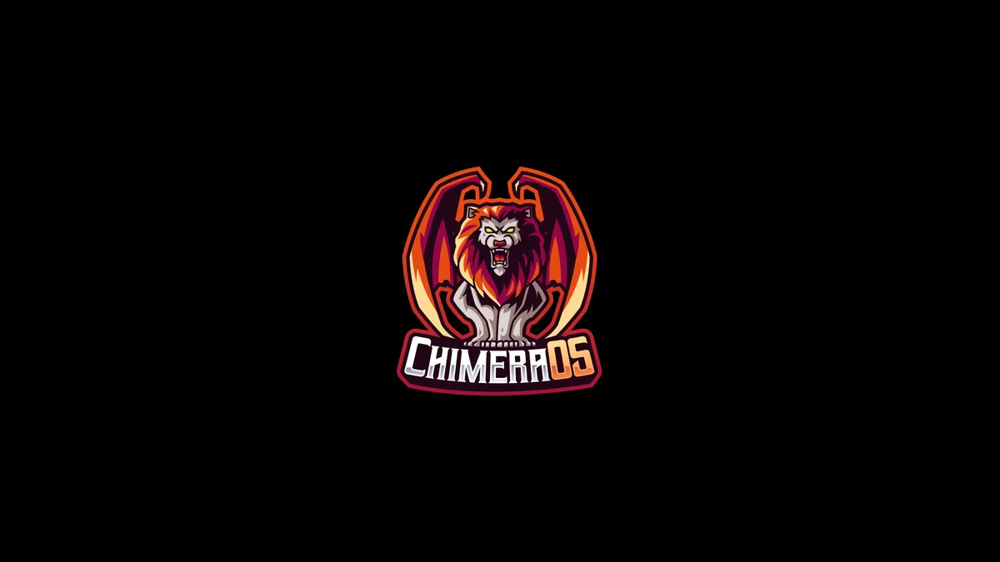

ChimeraOS
- 以 Steam 大屏模式为核心的客厅游戏操作系统。

- 1/5 个维度有可核验来源
- 仓库元数据只支持文档/社区维度；其余维度未深审并保留为 null，当前标记为待验证且暂不评星。
候选路线
- 可能用途 把旧游戏电脑改造成客厅主机。
- 设备范围 拟作为客厅游戏主机的电脑；GPU、手柄和具体硬件要求尚未核验。
- 目前已知 以 Steam 大屏模式为核心的客厅游戏操作系统。
- GitHub A Steam Big Picture based couch gaming OS
- 证据说明 E0 发现候选；用途描述来自上游仓库元数据或 README 首段，尚未独立核验具体设备兼容、安装结果或长期稳定性。
- 核查记录 PS-chimeraos · 2026-10-23T16:51:36Z
动手前
- 如果找不到与准确型号、硬件修订和固件相符的安装与恢复资料，不要刷写、拆机或购买配件。
仓库快照
- 归档 否；核查时未归档
- 最后 push 2026-08-02T20:10:51Z
- 默认分支 master
- API 许可证标识 MIT
- 许可证快照不自动覆盖固件、模型、图片、商标或第三方组件；最后 push 也不证明设备兼容。